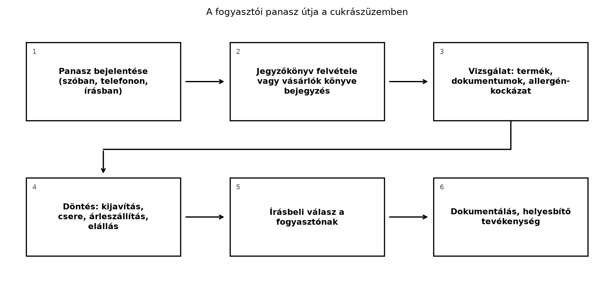

Képzeld el, hogy egy esküvői torta kiszállítása után a megrendelő telefonál: a torta krémje savanyú, és a vendégek rosszul érzik magukat. Vagy egy vendég a pultnál jelzi, hogy a gluténmentesnek mondott szeletben lisztes réteget talált. Az ilyen helyzetekben nem elég jól sütni: tudnod kell, milyen jogai vannak a fogyasztónak, mit kell tenned a panasz hallatán, hogyan kell vezetned a vásárlók könyvét, és mi a különbség a szavatosság és a jótállás között. Ez az alfejezet a fogyasztóvédelem alapjait adja a cukrász számára, hogy a vendégpanaszt ne veszélyként, hanem jól kezelhető szakmai feladatként lásd.
A fogyasztóvédelem úgy működik, mint egy többszintű védőháló: a fogyasztó először a cukrászüzlettel beszél, majd ha nem kap megnyugtató választ, békéltető testülethez vagy hatósághoz fordulhat. Az alábbi folyamatábra a panasz útját mutatja.

A folyamat célja, hogy a fogyasztó gyorsan és tisztességesen megkapja a panaszra a választ, a hibát pedig kijavítsuk vagy a terméket selejtezzük.
Definíció. Fogyasztóvédelem alatt a fogyasztók egészségének, biztonságának és gazdasági érdekeinek védelmét, valamint a fogyasztók tájékoztatását, oktatását és jogorvoslati lehetőségeik biztosítását értjük. A cukrászatban ez elsősorban az élelmiszerbiztonságot, a valós összetételt, a pontos tömegű és minőségű terméket, a helyes allergén-tájékoztatást és a panaszok szabályos kezelését jelenti.
Definíció. Fogyasztó az a természetes személy, aki az élelmiszert vagy cukrászati terméket a saját, nem szakmai vagy üzleti tevékenysége körében vásárolja. Vállalkozás pedig az eladó, például a cukrászüzem, amely a szakmája vagy üzleti tevékenysége körében értékesít.
A fogyasztóvédelmi szabályok azért fontosak, mert a vendég nem ellenőrizheti minden termék laboratóriumi tisztaságát: a cukrásznak kell garantálnia, hogy a termék megfelel a jogszabályi előírásoknak, a használati vagy fogyasztási célnak, és a feltüntetett tulajdonságoknak.
Jogszabály. A fogyasztóvédelemről szóló 1997. évi CLV. törvény rögzíti a fogyasztói jogok érvényesítésének alapelveit, a fogyasztóvédelmi hatóság feladatait és a fogyasztói érdekképviseletek szerepét. A polgári jogi háttér a Polgári Törvénykönyvről szóló 2013. évi V. törvény (Ptk.), amely a szavatossági és jótállási szabályokat is tartalmazza. A vendéglátó üzletek működésére vonatkozó ágazati előírások – például a vásárlók könyvének vezetése – külön rendeletekben jelennek meg (ellenőrizendő: hatályos ágazati rendeletek).
A fogyasztóvédelem intézményrendszere többszintű:
Továbbvitt eredmény. A panaszkezelés pontos dokumentálása és a hatósági ellenőrzésre való felkészülés az Ügyvitel, bizonylatok és üzleti kommunikáció alfejezetben kerül részletes tárgyalásra; a fogyasztóvédelmi tudatosság a környezetvédelmi és társadalmi felelősségvállalással a Környezetvédelem a cukrászatban alfejezethez kapcsolódik.
Definíció. A vásárlók könyve a fogyasztói panaszok írásbeli rögzítésére szolgáló, hitelesített, számozott oldalú nyilvántartás, amelyet a vendéglátó üzletben jól látható helyen, a fogyasztó számára könnyen hozzáférhető módon kell kihelyezni. Bejegyzést tehet bármely fogyasztó, aki a termékkel vagy a kiszolgálással kapcsolatban észrevételt, panaszt vagy javaslatot kíván tenni.
A vásárlók könyvére vonatkozó főbb előírások:
Példa. Egy vendég a vásárlók könyvébe írja: „A ma vásárolt krémes szelet tölteléke folyékony volt, és a teteje penészesnek tűnt. Kérem a vételár visszatérítését.” Az üzletvezető 5 napon belül írásban válaszol: a terméket bevizsgálták, a hibát a hűtőlánc megszakadása okozta, a vételárat visszatérítik, az aznapi krémes tételt kivonták és selejtezték, a hűtőpult hibáját javíttatták, és a HACCP-naplóban helyesbítő tevékenységként rögzítették. Ez a gyors, pontos válasz a fogyasztó bizalmát növeli; élelmiszerbiztonsági kockázatnál a panaszkezelés mellett a HACCP-helyesbítés és szükség esetén a hatóság értesítése is kötelező (ellenőrizendő).
A fogyasztói jogok gyakorlásában a szavatosság és a jótállás fogalmát gyakran összekeverik. A cukrásznak pontosan kell tudnia, mikor melyik alkalmazható.
Definíció. Kellékszavatosság a szolgáltatás hibás teljesítéséért való felelősség. Ha a cukrászati termék nem felel meg a szerződésben vagy a jogszabályban meghatározott követelményeknek – például romlott, félrevezető megnevezésű, allergént nem jelölő, vagy a feltüntetettnél kisebb tömegű –, a fogyasztó kellékszavatossági igényt érvényesíthet az eladóval szemben. Az eladói felelősség alatt az értékesítő cukrászüzemet értjük, nem a tojásszállítót vagy a lisztgyárat.
Definíció. Termékszavatosság a gyártó vagy a termék első forgalmazója felelőssége a hibás termékért. Ha a hiba a termék előállításából, összetételéből vagy csomagolásából ered, a fogyasztó a termék gyártójával szemben is felléphet. A cukrászatban ez akkor releváns, ha például egy saját gyártású bonbon csomagolása sérült, és ez okoz romlást, vagy ha egy félkész anyag gyártói hibás. A termékszavatosság a gyártóra vonatkozik, nem a kiskereskedőre, ezért a panaszkezelés során meg kell különböztetni a felelősségi köröket.
Definíció. Jótállás a vállalkozás által vállalt vagy jogszabály által előírt felelősség a termék hibájáért. Jótállás esetén a fogyasztónak nem kell bizonyítania, hogy a hiba már a vásárláskor fennállt; elegendő azt jeleznie, hogy a termék a jótállási időn belül hibásodott meg. A jótállás időtartama általában 1 év, de egyes tartós fogyasztási cikkeknél hosszabb, és árhatárhoz is köthető (ellenőrizendő: hatályos jótállási rendelet). Élelmiszereknél, így cukrászati termékeknél jótállás általában nincs, mert a minőségmegőrzési vagy fogyaszthatósági idő és a szavatossági szabály védi a fogyasztót.
A következő táblázat összefoglalja a három fogalom lényegét:
| Jellemző | Kellékszavatosság | Termékszavatosság | Jótállás |
|---|---|---|---|
| Kivel szemben érvényesíthető | Eladó (cukrászüzem) | Gyártó, első forgalmazó | Eladó vagy gyártó, a jótállási nyilatkozat szerint |
| Mi a hiba alapja | Hibás teljesítés a szerződéshez képest | Termékhiba a gyártási folyamatból | A termék hibája a jótállási időn belül |
| Bizonyítási teher | A fogyasztó bizonyíthatja a hibát, de a fogyasztói szerződésnél megdönthető vélelem segíti (ellenőrizendő: időtartam) | A fogyasztó bizonyítja a hibát | A fogyasztónak csak a hibát kell jeleznie, nem kell bizonyítania az okát |
| Időbeli korlát | Fogyasztónál általában 2 év a teljesítéstől (ellenőrizendő: használt terméknél rövidebb) | A termék forgalomba hozatalától számított meghatározott idő, gyakran 2 év (ellenőrizendő) | Jogszabályban vagy szerződésben rögzített idő, gyakran 1 év (ellenőrizendő) |
| Cukrászati példa | Romlott, kevesebb tömegű, allergént tartalmazó termék | Hibás csomagolás miatt romló saját gyártású bonbon | Nem jellemző élelmiszernél; inkább konyhai eszköz, kávéfőző |
Jogszabály. A Ptk. szavatossági szabályai szerint a fogyasztói szerződésben a kellékszavatossági igény elévülési ideje a teljesítéstől számítva általában 2 év, használt terméknél ennél rövidebb is lehet (ellenőrizendő: pontos határidő). A termékszavatosság érvényesítésének határidejét a Ptk. külön szabályozza, és a gyártóval szemben a termék forgalomba hozatalától számított meghatározott időn belül lehet fellépni (ellenőrizendő: pontos határidő). A kötelező jótállásról szóló kormányrendelet az egyes tartós fogyasztási cikkekre ír elő kötelező jótállást, de az élelmiszerekre, így a cukrászati termékekre nem vonatkozik (ellenőrizendő: hatályos rendelet).
Példa. A vendég esküvői tortát rendel, és a kiszállított torta kréme a helyszínen folyékony. A vételár visszatérítését kéri. Ez kellékszavatossági eset, mert a termék nem felel meg a szerződésben vállalt minőségnek. Ha kiderül, hogy a krém azért folyósodott meg, mert a gyártó által szállított zselatin gyártási hibás volt, a cukrászüzemben keletkezett kár miatt a gyártóval szemben termékszavatossági vagy kártérítési igény merülhet fel, de ez már az üzlet és a beszállító viszonya, nem a fogyasztó dolga.
Recept. A fogyasztói panasz kezelésének ellenőrzőlistája:
Figyelem. Ha a panasz élelmiszerbiztonsági kockázatra utal – például allergénszennyezésre, ételmérgezés gyanújára, idegen anyag jelenlétére –, azonnal állítsd le a gyanús tétel értékesítését, hűtsd le és zárd el a mintát, értesítsd az üzletvezetőt, és kövesd a HACCP helyesbítő tevékenységet. A fogyasztóvédelmi panaszkezelés nem helyettesíti az élelmiszerbiztonsági bejelentést.
A panaszkezelés minősége azon mérhető, hogy a fogyasztó időben, egyértelmű választ kap-e, a hiba kivizsgálása megtörténik-e, és a dokumentáció hiánytalan-e. Az alábbi pontokat érdemes ellenőrizni:
Eset. Esküvői torta rendelése után a megrendelő telefonál, hogy a vendégek között egy dióallergiás rosszul lett, mert a torta diómentesnek volt mondva, de a krémben diót találtak. A pultban a megrendelő bejegyzést tesz a vásárlók könyvébe, és kéri a vételár visszatérítését, valamint az orvosi költségek megtérítését.
Mit tesz a cukrászüzem?
Tanulság. A gyors, őszinte panaszkezelés nem gyengeség, hanem a vendégbizalom és a jogkövető működés alapja. Az allergén-hiba esetén a fogyasztóvédelmi panaszkezelés és az élelmiszerbiztonsági helyesbítő tevékenység együtt kezelendő.
1. feladat (A) Sorold fel, milyen fogyasztóvédelmi intézményekhez fordulhat a fogyasztó, ha a cukrászüzlet nem válaszol a panaszra!
2. feladat (A) Húzd alá, melyik eset tartozik a kellékszavatosság körébe: (a) a torta kréme romlott, (b) a pincér udvariatlan volt, (c) a sütőszekrény motorja meghibásodott.
3. feladat (B) Egy vendég a vásárlók könyvébe bejegyzést tesz, amelyben azt állítja, hogy a megvett 1 kg-os linzerkosár csak 850 g tömegű volt. A vásárlás napján kelt a bejegyzés. Ismertesd lépésenként, hogyan jársz el a panasz kivizsgálása és a válaszadás során!
4. feladat (B) Készíts egy rövid írásbeli választervezetet a 3. feladat panaszosának, amelyben leírod a vizsgálat eredményét, az intézkedést és a további jogorvoslati lehetőséget!
5. feladat (C) Egy esküvői torta átadása után derül ki, hogy a megrendelő szerint a torta nem 24 szeletes, hanem csak 18 szeletre vágható, és a tömeg is 10%-kal kevesebb a megrendeltnél. Elemezd, milyen hiba történhetett, milyen szavatossági jogokat gyakorolhat a fogyasztó, és hogyan előzhető meg a jövőben!
6. feladat (D) Tervezz meg egy panaszkezelési jegyzőkönyv-sablont a cukrászüzemed számára. A sablon tartalmazza az összes olyan mezőt, amely a jogszabályi megfeleléshez és a hatékony kivizsgáláshoz kell. Írd le azt is, hogyan használnád az üzlet napi gyakorlatában!
7. feladat (D) Gyakorlati feladat: keresd fel a helyi fogyasztóvédelmi hatóság vagy békéltető testület weboldalát, és gyűjtsd ki, mi a panaszbejelentés pontos módja. Készíts egy rövid jegyzetet arról, hogy a cukrászüzemben milyen dokumentumokat kell bemutatni egy ellenőrzésen!
1. feladat (A) A fogyasztó fordulhat a kormányhivatal fogyasztóvédelmi hatósági feladatokat ellátó szervezeti egységéhez, a békéltető testülethez, a fogyasztói érdekképviselethez, és bírósághoz. Élelmiszerbiztonsági panasz esetén a NÉBIH-hez vagy a kormányhivatal élelmiszerlánc-biztonsági szervéhez is.
2. feladat (A) A romlott tortakrém a kellékszavatossági körbe tartozik, mert a termék nem felel meg a szerződésben és a jogszabályban elvárt minőségnek. A pincér udvariatlansága a fogyasztóvédelmi panaszok közé tartozhat, de nem szavatossági kérdés. A sütőszekrény motorjának hibája jótállási vagy szavatossági eset a gyártóval szemben, de nem élelmiszerrel kapcsolatos fogyasztói ügy.
3. feladat (B) Lépések: - A bejegyzést rögzítjük, és a felelőst kijelöljük. - A terméket visszakérjük, ha van, vagy a vásárlási bizonylatot, nyugtát ellenőrizzük. - A konyhai méréssel ellenőrizzük a linzerkosár tömegét: ha a mérés 850 g, akkor a hiba valós, mert a nettó tömegnek 1 kg-nak kell lennie. - Megvizsgáljuk a gyártási naplót: lehet, hogy a cukrász a tésztát nem a recept szerint adagolta, vagy a csomagoláshoz használt mérleget rosszul kalibrálták. - A fogyasztónak válaszolunk, visszatérítjük a különbözetet vagy kicseréljük a terméket, és javítjuk a mérleg kalibrálását. - Dokumentáljuk a panaszt, a választ és a helyesbítő tevékenységet.
4. feladat (B) Választervezet: „Tisztelt Vásárlónk! Bejelentését köszönjük. A mai napon kivizsgáltuk a linzerkosár tömegét, és megállapítottuk, hogy a termék nettó tömege 850 g volt az előírt 1000 g helyett. A hibát a porciózó mérleg kalibrálási eltérése okozta. Az érintett mérleget azonnal újrakalibráltuk, és a dolgozókat oktattuk. A különbözetet, 150 g linzerkosár árát visszatérítjük, vagy kérésére kicseréljük a terméket. Amennyiben nem ért egyet az intézkedéssel, a lakóhelye szerinti békéltető testülethez fordulhat. Üdvözlettel: …”
5. feladat (C) A hiba oka lehet: a tortaforma mérete kisebb volt a megrendeltnél, a tészta nem kelt megfelelően, a krém mennyisége kevesebb, vagy a szeletelési irányelvek nem egyértelműek. A fogyasztó kellékszavatossági igényt érvényesíthet, mert a termék nem felel meg a megrendelt adagszámnak. Jogai: kijavítás (pl. póttorta), árleszállítás (ha az eltérés csekély), vagy ha a hiba jelentős, elállás és vételár visszatérítés. Megelőzés: a megrendelőlapon rögzíteni kell a szeletszámot, a tortaforma átmérőjét, a tömeget, és a gyártás során mérni kell a félkész rétegeket; a kész tortát mérlegelni kell.
6. feladat (D) A jegyzőkönyv-sablon mezői: - Jegyzőkönyv száma, dátum, időpont - Fogyasztó neve, elérhetősége - Termék megnevezése, mennyisége, vásárlás dátuma, blokk száma - Panasz részletes leírása - Fogyasztó igénye (visszatérítés, csere, javítás, egyéb) - Vizsgálat megállapításai, intézkedés - Válaszadás határideje és módja - Aláírások, dátum Használat: minden panaszról azonnal töltsük ki, a fogyasztó kapjon másolatot, az eredeti az üzleti irattárba kerüljön.
7. feladat (D) A gyakorlati feladat megoldása a helyi szervek aktuális tájékoztatója alapján történik. A jegyzet terjedjen ki: a panaszbejelentő űrlapra, a benyújtás módjára (online, posta, személyesen), a határidőkre, és arra, hogy ellenőrzéskor a cukrászüzemben a vásárlók könyve, a gyártási naplók, a HACCP-dokumentáció, a hulladék- és hőmérsékleti naplók kérhetők. Ellenőrizendő: aktuális szervezeti nevek és eljárási szabályok.
A fogyasztóvédelem a cukrász mindennapi munkájának része, nem külön teher. A fogyasztói panaszokat gyorsan, jegyzőkönyvvel és írásbeli válasszal kell kezelni; a vásárlók könyve hitelesített, jól látható és a vendég számára hozzáférhető. A kellékszavatosság az eladói felelősség a hibás teljesítésért, a termékszavatosság a gyártói felelősség a termékhibáért, a jótállás pedig a vállalkozás által vállalt vagy jogszabályban előírt felelősség, amely élelmiszereknél általában nem kötelező. A határidők, a vásárlók könyvének hitelesítője és a békéltető testületek pontos szabályai jogszabályban rögzítettek, ezért mindig ellenőrizd az aktuális előírásokat. Továbbvitt eredmény. A panaszkezelés dokumentálása és a hatósági ellenőrzésre való felkészülés az Ügyvitel, bizonylatok és üzleti kommunikáció alfejezetben folytatódik; a fogyasztói tudatosság és társadalmi felelősség a Környezetvédelem a cukrászatban alfejezethez kapcsolódik.
A szöveg hivatkozik az 1997. évi CLV. fogyasztóvédelmi törvényre és a 2013. évi V. Ptk.-ra. A vásárlók könyvének pontos hitelesítési szabálya, a válaszadási határidő, a kormányhivatali hatáskörök, a békéltető testületi eljárás részletei, a kellékszavatossági és termékszavatossági határidők, valamint a jótállási rendelet hatályos száma és tartalma ellenőrizendő. A fogyasztóvédelmi hatóság aktuális szervezeti elnevezése és a NÉBIH feladatmegosztása szintén ellenőrizendő. A példák tanulási célt szolgálnak, nem jogi tanácsot.